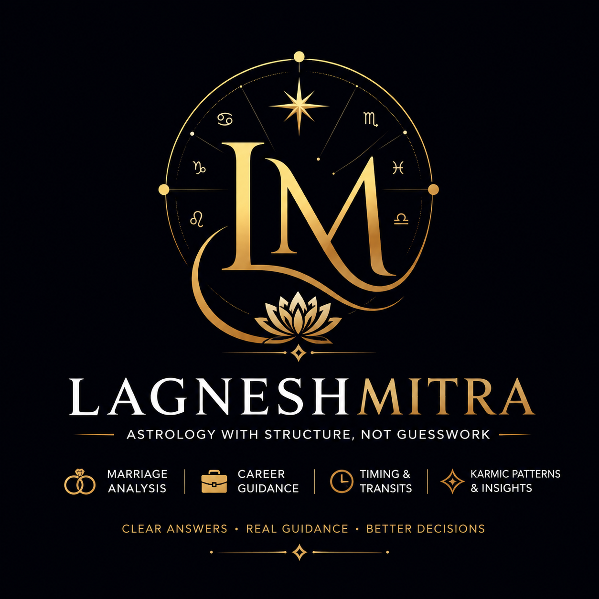

Marriage • Relationships • Delayed Marriage • Sustainability Analysis
WhatsApp ConsultationExplore our latest astrology research, spiritual publications, Vedic astrology observations and featured content.
🚀 Enter LagneshMitra Special GalleryCurrent planetary movements, major transits and astrological developments will appear here.
Explore astrology research and observations.
Track important planetary movements.
Access consultation and report services.
Connect directly with LagneshMitra Astrology.
Welcome to LagneshMitra Astrology. My work focuses on Marriage Analysis, Delayed Marriage Cases, Relationship Compatibility, Sustainability Factors, Hidden Karmic Patterns and Advanced Horoscope Assessments. Every report is manually prepared after detailed chart analysis. No automated software-generated reports are provided.
After building a strong presence on Reddit and engaging in thousands of discussions related to marriage, relationships and astrology, LagneshMitra finally launches a dedicated platform designed for something much more personal. This is not a social media feed. This is not a public discussion board. This is a place where people can directly discuss their concerns regarding marriage, delayed marriage, relationships and life situations. Many people hesitate to discuss personal matters publicly. This platform was created to provide a focused and private environment where those concerns can be discussed more comfortably. I love astrology and genuinely enjoy studying charts, patterns and human experiences. Whenever someone approaches me with a problem, I try to understand it with the same seriousness I would give to my own situation. Every report is manually researched and prepared. No automated software-generated reports are provided. This is slow work. Trust, reputation and quality are not built overnight. They are built gradually through consistency, research and experience. My hope is that this platform becomes a place where people feel comfortable discussing their situations openly and receiving thoughtful guidance. Thank you for visiting LagneshMitra.
LagneshMitra Memberships are currently under development. Future members will receive access to exclusive astrology discussions, advanced relationship observations, research frameworks, sustainability studies, community interactions and guidance sessions. The objective is to create a serious environment for people interested in deeper astrology rather than quick predictions. More details will be announced soon.
Quick assessment of marriage possibilities and major indicators.
Detailed analysis with hidden factors, timing and sustainability indicators.
Focused study of delays, obstacles and karmic causes.
Compatibility analysis for couples and marriage prospects.
Advanced D9 based relationship and marriage assessment.
Comprehensive life direction and karmic blueprint analysis.
Email:
lagneshmitralm4.0@gmail.com
WhatsApp:
Direct Consultation Available
Reddit:
u/LagneshMitraAstro
Website:
www.lagneshmitra.com